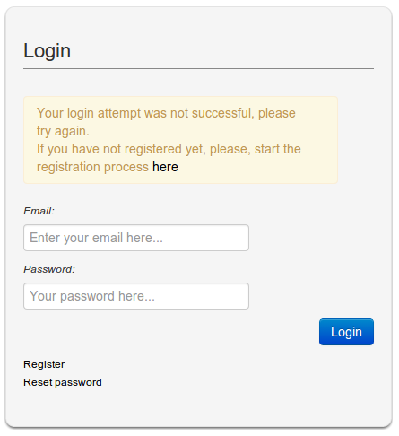
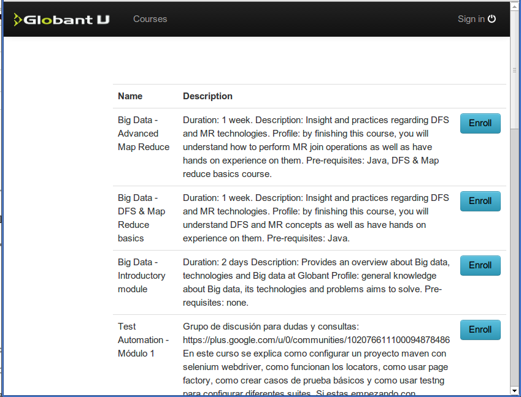
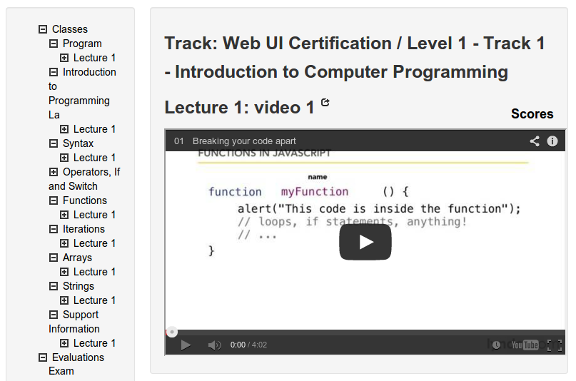
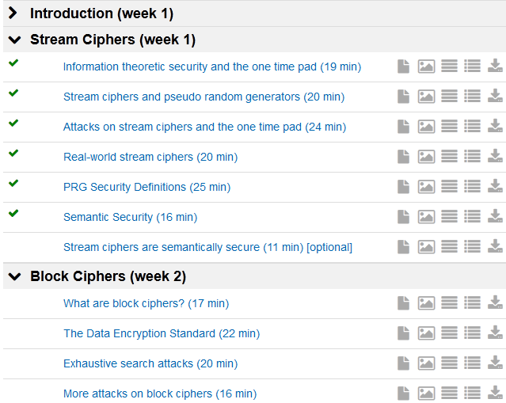
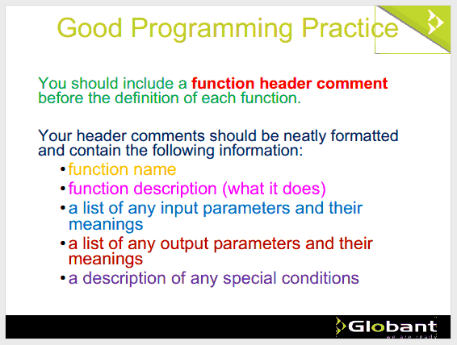

Test methodology
- The test is of the "Expert Review" kind. It differs from the usual ER methodology in that it was performed by a single expert while for expert reviews it's normally recommended to gather several reviewers.
- All usability reviews are dated, because the target UI is inevitably compared to other state-of-the-art current UIs. As we progress in the making of better and better UIs, what was good some time ago, tuenr sout to be inacceptable according to current standards. This test is performed as of January 2014 and the informal comparison is made against coursera MOOCs.
- Caveat: These reports, because of their nature, are all about the UI things that are not perfect. Less experienced developers who authored the reviewed system tend to resent the comments, while the most evolved take is the same as QC bug reports: great opportunities to get it better.
HFI describes ERs thus:
Expert reviews are usability reality checks that result in immediate and concrete fixes to improve your customers' or staffs' experience. Fresh eyes review a design against industry standards and current research on how humans think and interact with things. An Expert Review is an important technique because it's often hard for designers to recognize usability trouble spots in their own designs. They created the task flow. They know how it works. When followed by Usability Testing, an Expert Review ensures that an organization's usability investment is optimized.
Testing Globant U
The test reports struggling against the register/login flow, and taking the "Web UI Certification / Level 1 - Track 1 - Introduction to Computer Programming" course.
Entering: Sign in form sequence
The link to Globant U courses takes to a slightly non-standard login form.
Sign in and registration form comments
This worked as if the registration part was not fully developed. Like for example, the landing page lacks a "Register" link for the newcomers. I liked the minimalist design, but it might convey a sense of rejections for those who come for the first time.
- There is a "Reset" button
Reset buttons are not used any more. In the nineties it was customary to set one in each and every form, and it was never used. Its function is to reset all the form's input fields to their original values, usually empty. It's only useful for lengthy forms used repeately.
In this particular case the presence of a button labeled "Reset" add a bit of confusion because a user could think it's for resetting the password, duplicating the "Reset password" link.
Suggestion: delete the "Reset" button.
- There is no remember me option
It is expected that the users come back to this site many times. Having to enter their credentials in full each and every time poses a small burden that slightly discourages the return, like Globant's "stars" program that is seldom used because it requires the glober to enter Glow.
Suggestion: Add a me remember me option that not only remembers the credentials but also takes the user immediately to the last page accessed. Make the last page accessed thing so that it works even if the user is accessing the site from another device.
- An error message breaks the layout Defects of this type tend to erode the
user's trust on the site, conveying a sense of sloppyness that taints the
whole site including the quality of the content.
Suggestion: Add a
clearto the Email label, or don't float the message. - The input fields have proportional sizes
When the form is displayed too wide these fields are set too long for the intended content. The size of the input should give the user a hint about the size of the expected content.
Suggestion: Set the fields with a fixed-proportional size, like
18em. Set it rather big to encourage the use of lengthy passwords. Note that there is no need for both fields to be equal in size, but it's customary to do it so the user recognizes a login form immediately. - The links "Register" and "Reset password" are placed in opposition
As these two links are of the same class, they should be placed in equivalent positions. The logical ordering is "Register" first because it designates an action that happens before.
- The form was built with a responsive layout
This is not apprppriate for login forms. Actually, was is not appropriate is that a simple login form spanned widths in excess of 750px.
Also, in a viewport width of about 760px the layout breaks when there is a 350px wide error message artifact displayed into a 240px wide container.
Suggestion: Avoid using bootstrap for this particular form, or make it fixed-width in units that don't depend on the screen resolution.
- There is no indication of the kind of email required
From the first User Registration step stems that the email is supposed to be a Globant email. Actually, entering another domain's email brings up a "This email address is not allowed" error message.
Suggestion: Change the "Email:" label in the login form to "Globant email:".
- There is no indication of the kind of email required
In the first User Registration step, entering a non-Globant email brings up a "This email address is not allowed" error message. The message states that there is an error, but doesn't tell what is the error. The user has to guess (actually it's simple because the form asks for a Globant email, but anyway).
Suggestion: Reword the message to something like "Only Globant emails accepted", or instead of the email ask for the plain user name without domain.
- There is no indication of the password required
It might be Globant's domain password, or a password specific for this site. Being that the identification is Globant's email the password might well be also Globant's.
Suggestion: Make it clear, at least in the registration form, what is the password expected.
- Dead end in user registration
When the user tries to register the second time a "User already registered" message shows, the email input is erased, and the only available option is the same "Register" button.
Suggestion: Provide a link to move out, like "Back" or whatever. Also, don't erase the input so the user can see which is the email that is triggering the error.
- The "Password Reset" dialog does not state the requirements
Entering a short or a simple password triggers a message "Please, check the password confirmation and the minimal length of 8". But nowhere in the form are the password quality requirements published.
Suggestion: State the password quality requirements, and implement a client-side quality check instead of an "error" message.
- Resetting the password leads to a dead end
A "Password Reset" dialog from a previous attempt led to a page with a message "No user found with this email address" but the address in not shown and was not input in the previous step.
Suggestion: Revise the flow of the registration and login subsystem.
- The login form including a few of the suggested visual changes:

- Although the link was correctly labeled "Sign in", the form in intitles
"Login". This is a minor lack of consistency.
Suggestion: Always use "Sign in" in all pages. Not "Login" that is generally being phased out.
Courses listing
The landing page seems to be the courses listing.

- Showing always the complete courses listing could end up being completely
pointless, for example if there were a hundred or more entries.
Suggestion: Take the student to her own landing page, containing the list of courses chosen, and a link to the last position in the last course opened.
- The page is laid out with bootstrap, but it doesn't behave. The snapshot
above is the narrowest possible in a notebook (1280 x 800).
Suggestion: Fix the layout so this page behaves in handheld devices.
- The layout of the page is not scannable. The course names are crammed in
cells of a too-narrow column and in general the layout is not readable
neither responsive.
Suggestions:
- Set the course titles in a bolder font, spanning the full width of the content column.
- Drop the table layout and use divs to be able to make it responsive by manipulating the "display" CSS property.
- Don't highlight the whole course data on hover, it's a clickable affordance that's not honored.
- Delete the first headings row. It's obvious and useless, and with the suggested layout inaccurate.
- Do not show the course duration as the first item in the description. The student will usually want to know it after having read the description. The duration belongs to the end of the description.
- Delete the "Description" label. It's obvious and as such it belongs to the "noise" category: the reader has to process and discard it. Same with the "Profile" label.
- See alternate layout at the end of this section.
- The courses list needs a "Search" function. This is not needed right now, but will be a must as soon as the list grows. Al alternative would be tagging the courses, and allowing the user to filter by tag.
Alternate layout
Below is an attempt to show the same data, arranged in a more usable fashion.
Most notably, the user can scan the course titles quickly, because they are highlighted and set on top of the subordinate data.
Second in importance is the course description, while the ancilliary data is grayed so the user can read it if she wants to, but these items are not at all outstanding.
Floating the "Enroll" buttons to the far right moves then out of sight, but available to be found at once when needed.
This data arrangement has the additional advantage of being ideal for responsive layouts, as you can see by narrowing the viewport.
After completing this course, you will understand how to perform MR join operations as well as have hands on experience on them.
After completing this course, you will understand DFS and MR concepts as well as have hands on experience on them.
General knowledge about Big data, its technologies and problems aims to solve.
Si estas empezando con automation, este es el mejor lugar para aprender y aclarar conceptos.
Grupo de discusión para dudas y consultas: https://plus.google.com/u/0/communities/102076611100094878486
Develop sites using new layout tags, and the new CSS3 Layout specification. Learn about CSS3 animations, transitions, transforms and the new CSS3 possibilities.
Facebook, Twitter, Google.
Understand the application layer of backend technologies and design integration plans together with backend developers. Understand the customer value founded on requirements in order to participate in functional definitions. Coordinate requirements implementation between functional areas and development teams. Build high-performance teams based on people development.
Understand responsibility over the frontend delivery.
Following the Web UI Certification track
For this part of the report I took the first course of the track, a programming primer. During the course I took notes of the issues I found.
This is a subject I know in full and have taught in the past at university level. As I know the subject, I was enabled to detect issues about the content in addition to the UI issues.
The content issues are specific of this course, while the UI issues might be applicable to other courses implemented with the same platform.
In general terns, the platform looks as if it was not fully baked, with a plethora of tiny details to be fixed. Although each detail is a small issue by itself, it is the sum of many small things what lowers the usability of a UI, and this is the case.
As of the content, the course is made of a set of very well explained videos presenting programming in a rather outdated fashion. Eack lecture, comprised of several videos, contains a Powerpoint-type document that is not fully integrated with the related videos, and its quality is not high.
Additionally, it seems that we don't have legal rights to use these videos. The course has an additional section "Support information" that is of much lower quality.
Every person has only one opportunity to start learning about programming in their lives, and the quality of that experience will impact all their next steps. IMO this course is not the kind of experience that will not make the students love software development.
Developing a course for the purpose of priming totally non-programmers is a huge effort. On the other hand, such effort was already untertaken by a lot of others.
I strongly suggest that we focus on new turf, and instead of running a homebrew course for a few hundred globers we think big and massively exhibit our real power.
If we could leverage other people's courses we could focus in Globant's reals strengths. The fact that in Globant there are many people who are great programmers doesn't mean that we have the required expertise. Introductory courses are most sensitive to the instructor's didactical abilities, which many (not to say most) hardcore geeks completely lack.
A quick search, only in the coursera archives, returned a course named "Learn to Program: The Fundamentals" which is currently finished but open and I plan to evaluate because it can show interesting statistics:
# users registered at close of course: 66,510 # users who watched the first video: 48,520 # users who watched the last video: 10,935 # users who submitted the final exam: 8,600 # Statements of Accomplishment: 7,839 (11%)
This is a very good record for a MOOC.
The course has 141 reviews which might be useful for our purpose, with an average rating of 4.6 stars out of 5. It links to other similar courses:
 |
6.00x:
Introduction to Computer Science and Programming Massachusetts Institute of Technology — John Guttag, Chris Terman, Eric Grimson, Larry Rudolph |
21 Reviews 4 stars |
 |
Computer Science 101 Stanford University — Nick Parlante |
6 Reviews 4 stars |
 |
Intro to Computer
Science Dave Evans |
28 Reviews 4.5 stars |
| |
Learn to
Program: Crafting Quality Code University of Toronto — Jennifer Campbell, Paul Gries |
36 Reviews 4.5 stars |
| |
An
Introduction to Interactive Programming in Python Rice University — Joe Warren, Scott Rixner, John Greiner, Stephen Wong |
593 Reviews 5 stars |
Track: Web UI Certification / Level 1 - Track 1 - Introduction to Computer Programming
Turns out that instead of one single course we could offer the globers a wider choice so they can take the course that fits them better.
Content comments
The course is based in a set of lynda.com videos, published in youTube, that are somehow outdated both regarding the content and also the approach.
- This track, "Introduction to Programming", instead of being an integral part of the Web UI course should be a separate course by itself, bacause it's also basic in other courses. Instead of being a part it should be a prerequisite.
- The lynda.com videos in Lecture 1 contain a lot of ancilliary information
that the student doesn't need yet, like the differences between compiled or
interpreted languages, or information about machine code.
IMO having to process all this information up front, in the first 15 minutes, poses an arid landscape to the student who is eager to see some real code once and for all.
IMO it should start with something like the content of the video in Syntax → Lecture 1 → Video 2
- There is an item in the left hand index labeled "Introduction to Programming La" which is clearly wrong. It seems as if it was truncated, but the complete last word (presumes "Languages") is never shown. Also, this course is not an introduction to programming languages, but to programming.
- The slides in Lecture 1 have the same problem. I'd save the historical background for an upcoming class.
- Slide 18 in Lecture 1 is misleading.
- Slide 28 is a circular definition of OOP, smartes students will ignore it.
- Slide 34, about OOP inheritance, introduces a bad practice which is using pluralized names for classes. Plural names are for collections.
- Slide 39, about identifiers, is a bad explanation. Firstly, identifiers shouldn't be defined as "the names of objects" disregarding the fact that the word "object" has a special meaning in this context. Secondly, the "symbolically" term used is the right way to define this but it's used before being presented. And finally, there is no mention to function names as identifiers.
- In slide 45 "Structured Programming" is mentioned but was never defined (and will never be, I guess for now).
- Slide 47, about passing parameters by value, mentions the parameter concept which is not yet defined.
- Many other slides display conflictive content. IMO exposing the students who have no idea about programming to this material might harm them in an irreversible way.
- Syntax → Lecture 1 → Video 1, is severely outdated about the usages of the JavaScript language.
- Syntax → Lecture 1 → Video 5 is very good in how it explains some concepts about numeric variables.
- Sometimes there is no correlation between the laft hand pane and the
content pane, i.e., it's not possible to find out which of the elements of
the index is displayed as content. In the example, the title at the left
don't match the titles at the top of the right content pane.

- The video at Classes → Functions → Lecture 1 → Video 4 doesn't come up.
- IMO the word "Document" is too generic. Yes, it is a document. But
designing it as "Document" is like to have a son and name him "Son".
Suggestion: Instead of "Document" use the section names, like "Operators, If and Switch" or "Functions".
- The content of the Globant branded "Document" of the "Functions" section is not carefully related to the content of the corresponding videos.
- The "Document" has links telling the student to watch the lecture videos.
But, the videos are listed before de "Document" so the natural
order would be to watch the videos and then open the "Document" that point
to the same videos.
Suggestion: If the "Document" has to be opened before in order to be led to the videos then set the link to the "Document" before the video linls.
Also, if the videos are subordinate to the "Document" then the video links should also appear as subordinates of the appropriate "Document" link.
- In Classes eee Iterations eee Lecture 1 eee Document eee Slide 16 the
name of the video is wrong, repeated from the previous video.
It should be "Creating a for loop".
- Given that the videos have their own descriptive names, those names should be displayed in the left hand index, like "3 Creating a for loop". This is helpful for the students, for example in case they wanted to review a subject. With the current arrangement they must remember the correlation between video numbers and subjects, or open videos until they see one that has the right title.
- Each section should have a small assessment after if, for the students to know that they understood the basics or that they should review the subject.
- The lynda.com videos belong to lynda.com and one is supposed to pay for the right of using them. See an example here: as soon as I clicked "play" the site requested me to pay.
- In Support information → Lecture 1 → Video 1, the code examples are written in MEL and Python, while all the previous examples are written in JavaScript. IMO this is too bold for a forst contact with programming.
- The "Support Information" section videos are of much less quality than the previous ones. Also, these videos are focuse on startin programminf 4D models with Blender, which is a good thing, but IMO falls out of bounds in a course like this.
- The "Exam" is void.
UI & interaction comments
- Videos have to open in the course window
- There must be a "next" button in each and every step
- Anyway, the hierarchy at the left panel has to highlight the currently selected item
- The hierarchy at the left somehow has to convey information about which
items were already visited by the student
Check the coursera videos listing below. The videos already seen have a checkmark.
 - Clicking compound items in the left hand hierarchy should display their sub-hierarchy in the content pane.
- There should be a set of back and forward buttons, for the student to backtrack his progress. Alternatively, stack their movements in the browser's history.
- There are many "Lecture 1" sections. This difficults references in questions.
- Getting back to the course doesn't open it in the last lesson accesed, neither the system remembers the state of the left hand side artifact (should display as it was when the page last closed).
- The "Documents" are written in different colors, several colors per
slide, that convey no apparent meaning. The software code is usually
displayed in different colors to highlight the syntax, but this is not the
case. Reading text like this is distracting, as the mind automatically
attempts to decypher the meaning of each color.

Suggestion: Do not use ramdon colors, stick to black or dark gray.
Taking course: Web UI Certification / Level 1 - Track 2 - Web Development
- The enrollment passes the user through the sign in form, which is
implemented as a separate page. After signing in it takes the user back to
the courses listing, but not in the same scroll position. This forces the
user to search again for the course in irder to click its "Go to class"
button.
Suggestion: Replace the "Enroll" button by a "Go to course" that takes the user to a "course's home page" with details about the course (like a picture of the author, a related image or a screenshot) and put the "Enroll" button in that course homa page and do the whole enroll thing there, including abiding to the conduct code. Thus, if the action requires signin in the user would be taken back to the exact place where she was before.
As a temporary quick fix, take the student directly to the course material at the end of the enrollment process.
- The left-hand index starts with a root "Classes" item. This is pointless,
because it's not functional and thus only adds noise.
Suggestion: do not show the "Classes" item in the left-hand item.
- The first element og the left-hand index is labeled "Program". This is
not good English.
Suggestion: Replace "Program" by "Syllabus".
- The "Program" element is a 3-level structure thus:
- Classes
- Program
- Lecture 1
- Video 1
- Document-+++++++++++++++++++++++++++++++++++++++++++++++++++++++++++++++++++++++++++++++++++++++++++++++
- Lecture 1
- Program
The only actionable item is "Document". There is no video, and this doesn't qualify as a lecture, thus such labeling is misleading.
Suggestion: Link the "Document" to the first level and delete all the other non-functional levels.
- Classes
- Section "Web Development Core Concepts"
- The first videos give the student a historical review of the making
of the Internet and social media. This, albeit interesting, is not
essential knowledge for the developer to be, who might already know
most of it. Also, this poses a semantic layer while the student is
aiming at the underlaying technologies.
Suggestion: Take these videos from the mainstream course and tag them as interesting optional material for the curious.
- Video 5, about widgets, is a commercial from somewhere, that implies
a lot of the knowledge this course is supposed to provide.
Suggestion: Turn down this video.
- Video 11 stops in error after a few minutes. Should be replaced by this other version of itself: http://www.youtube.com/watch?v=IDj983Ggjk8.
- The whole "Web Development Core Concepts" lecture (11 videos) is not about web development, but web history, usage and trends.
- The "Document" link is void.
- The first videos give the student a historical review of the making
of the Internet and social media. This, albeit interesting, is not
essential knowledge for the developer to be, who might already know
most of it. Also, this poses a semantic layer while the student is
aiming at the underlaying technologies.
- Section "HTML Structure, Layouts, CSS":
- There is no "HTL Structure" content, right from the first video the subject is CSS, and being that CSS is for HTML then HRML should have been presented before.
- The section starts with an enumeration of the different doctypes. The student learns that HTML 3.2 does not support frames and style sheets before being told what frames ans style sheets are. Additionally, for a student starting today, the simple HTML5 doctype would be enough, at least during quite a while. The doctype is the first line of the HTML document, but need not be the first concept tossed to the student.
- Video 2 stops in error at start. This seems the original one: http://www.youtube.com/watch?v=Awmx8XlgcaE.
- Video 2 is a CSS primer, about how to add style to HTML elements that haven't been introduced yet. Also, it's scope is too limited to be presented as the education source: it merely walks the user accross a few pointless color change examples.
- Section "Support Information":
- There is a "Lecture 1" tied "Vdeo 1" and "Document", all empty.
Suggestion: Delete empty sections.
- There is a "Lecture 1" tied "Vdeo 1" and "Document", all empty.
- Section "Evaluation":
- This section has visual design issues that make it look as a low
quality production. The issues I see are:
- Lack of a visual hierrchy. All text is set with the same font
size and weight.
Suggestion: Highlight the exam title and the questions text.
- In multiple choice questions, the buttons are set after their
labels. This is not the usual arrangement, and makes it look
untidy. Usually the buttons are set in a straight vertical column
and their labels after the buttons.
Suggestion: Set the buttons to the left of their corresponding labels.
- Technical: The id="question" is used in many places (23) which makes this HTML invalid.
- The word "Question:" in each and every question is obvious and
redundant.
Suggestion: Delete "Question:" from each question.
- The labels and theit corresponding buttons are not linked. This
is both a usability and an accesibility issue. A lind user would be
uncomfortable filling this form, the other users cannot choose an
answer clicking its label, they are forced to click the (smaller)
button. All modern forms link the labels and their inputs. See the
comparison of the original exam vs. a
modified version.
Suggestion: Link each label to its associated button.
- In the first question the name "Mozilla" is mispelled.
Suggestion: Add the missing "L".
- The title "Exam Web Development" sounds strange in English.
Suggestion: Switch to "Web Development Exam".
- Lack of a visual hierrchy. All text is set with the same font
size and weight.
- This section has visual design issues that make it look as a low
quality production. The issues I see are:
Exam comparison
Current version:

Modified version, implementing the suggestions: